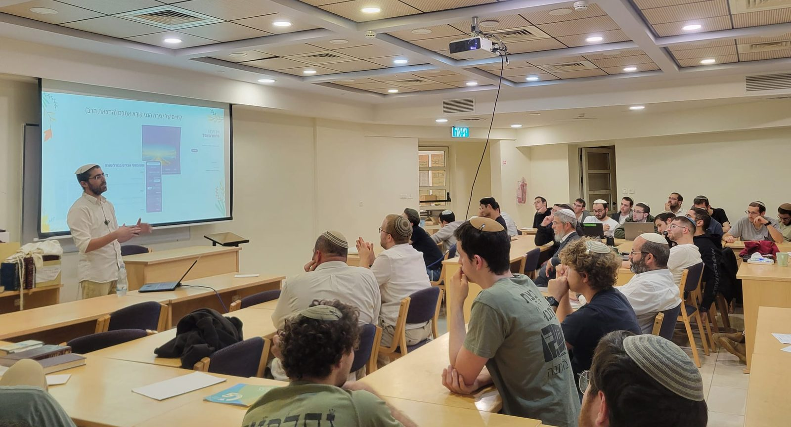
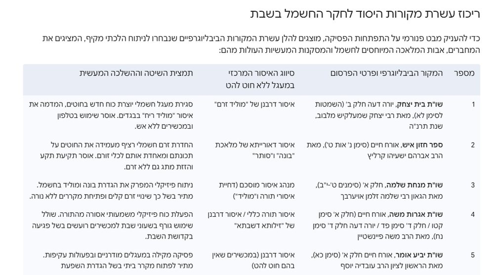
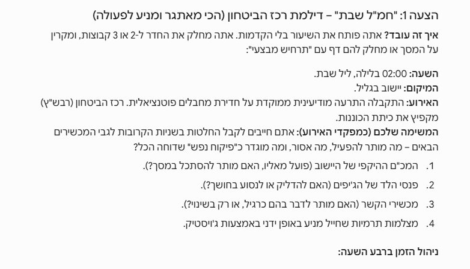
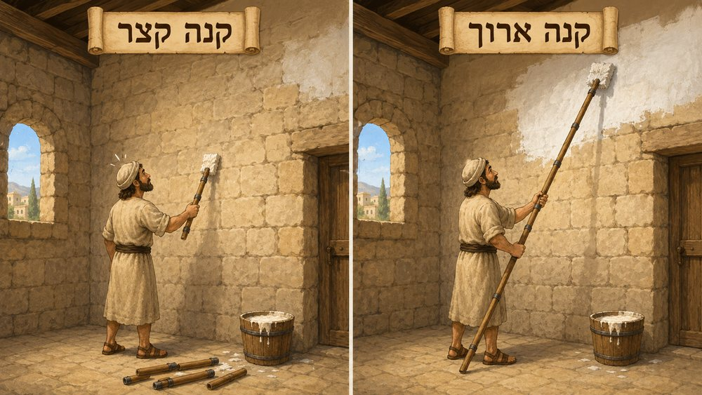
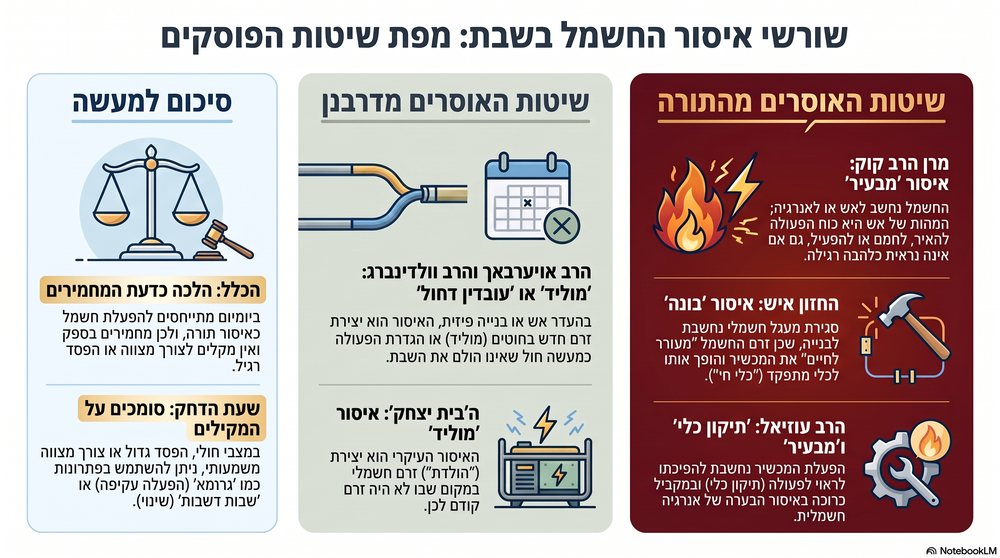
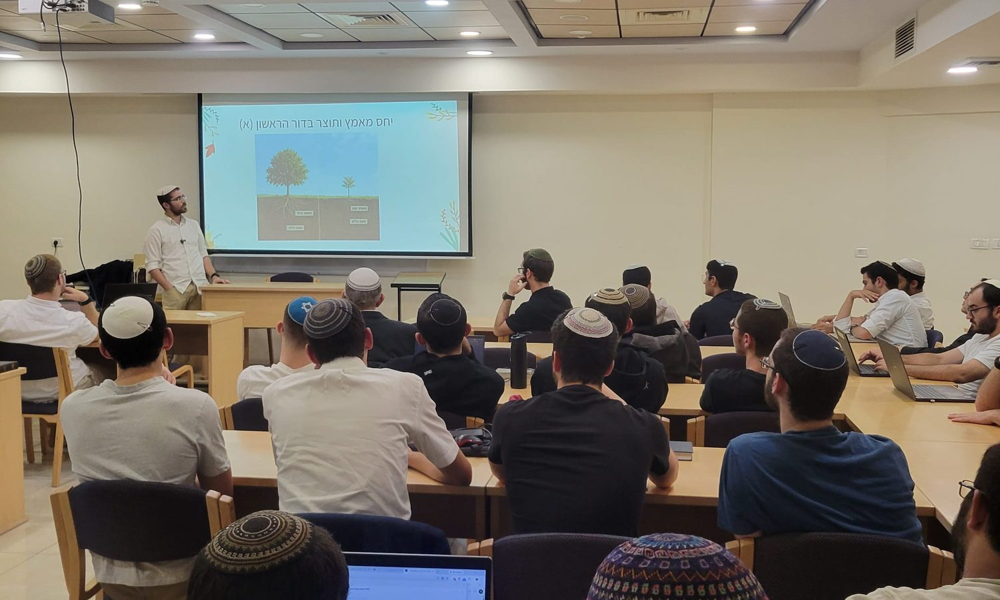
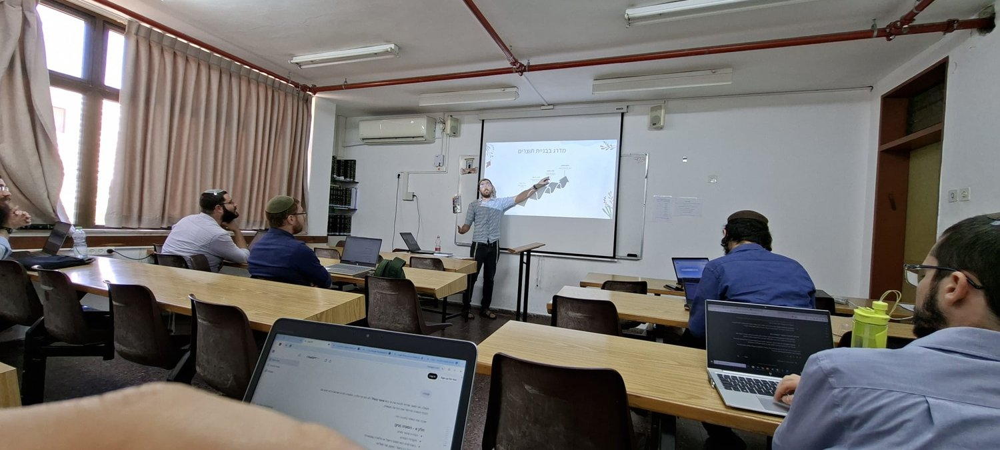
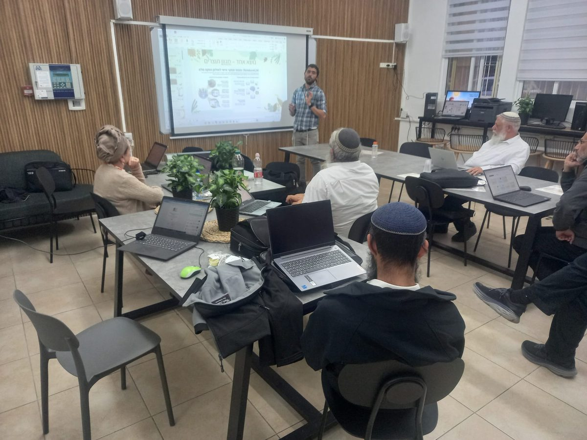

השפעה רוחנית
מה הבינה עושה ללימוד, ליצירה ולעבודת ה'?
מלמד לאנוש בינה · הרב אפרים שרם
הרצאות וסדנאות לישיבות הסדר, מההיכרות הראשונה עם המהפכה ועד יצירה תורנית ברמה גבוהה.
לתיאום בוואטסאפ
הרצאות והשתלמויות שהועברו ב:
השלב הראשון
כל שבוע מופיע כלי חדש, והר"מים הולכים לאיבוד בין הכלים, הכותרות וההשפעות.
מה הבינה עושה ללימוד, ליצירה ולעבודת ה'?
איך היא משנה את התלמידים ואת הקשר בינם לבין רבותיהם?
לאיזה עולם עבודה הבוגרים שלנו עומדים לצאת?
רבי פרידא, הפדגוג הגדול
רבי פרידא חזר על הלימוד עם תלמידו ארבע מאות פעמים, וכשהתלמיד לא הבין, חזר איתו ארבע מאות פעמים נוספות (עירובין נד, ב).
לר"מ של היום אין ארבע מאות שיעורים לכל סוגיה. הבינה מאפשרת לו להסביר את אותה סוגיה בעוד דרך ובעוד שלב.
השלב השני
גם מי שכבר משתמש בבינה מתקשה להגיע לרמות הגבוהות בכל סוגי השימוש.
דוגמה מסדנה בישיבת בית אל: הלכות חשמל בשבת
סורקת מאמרים, פסקים ותשובות, ומחזירה רשימת מקורות מסודרת עם הפניה לכל אחד.

מציעה כמה פתיחות לשיעור, מזהה מראש את הקטעים שיקשו על התלמידים ומכינה שאלות הבנה בכמה רמות.

יוצרת תמונה מדויקת לפי הסוגיה, כך שהתלמיד רואה את המציאות שהגמרא מדברת עליה.

הופכת את אותו חומר למצגת, לאינפוגרפיקה, למפת חשיבה או למשחק לימודי.

אפשר להזמין כל מפגש בנפרד, או את שניהם כמסלול אחד.

1הרצאה לצוות ולתלמידים
היכרות רחבה עם מהפכת הבינה והמקומות שבהם היא פוגשת את התורה.

2סדנה מעשית לצוות הר"מים
התנסות מעשית ביצירה תורנית בעזרת בינה, על נושא שכל ר"מ מלמד.
"בעקבות דיון והמלצה שעלתה פה בעבר, במסגרת ימי היערכות לשנה הבאה הזמנו את הרב אפרים שרם להרצאה לצוות שלנו על השימוש בAI בלימוד והוראת תורה בכלל ועם דגשים על הצרכים והרצונות של לימוד בישיבה. היה מוצלח גם לאלה שפחות הכירו והתנסו בזה וגם לאלה שכבר ידעו דבר או שניים. ממליצים בחום."
הרב יובל וקסלרר"מ בישיבת הסדר
"הזמנו את הרב אפרים שרם לישיבת מדריכי תושב"ע על-מנת להכיר יותר מקרוב בחידושים שהבינה המלאכותית מזמנת עבורנו בדגש על הכנת מצגות. המפגש הועבר באופן מדורג ומקצועי והשאיר את צוות ההדרכה עם רצון להעמיק, לחקור ולהפיק את המירב לטובת הוראה איכותית בתושב"ע"
הרב אלקנה שטראוסמדריך תושב"ע ארצי בחמ"ד
"תודה גדולה! השתלמות סופר חשובה!! נתת המון כלים חשובים ויעילים! והסברת בצורה ברורה ובהירה, תודה רבה רבה! המשך לעשות חייל!"
יוסי כהןמורה בתיכון במרכז הארץ

ר"מ, מדריך ויוצר תורני. מלמד בישיבות הסדר ובישיבות תיכוניות, עורך תורני במכוני הלכה שונים, כותב תוכניות לימודים בגמרא לחמ"ד, וממובילי הטמעת הבינה המלאכותית בתושב"ע בחמ"ד.